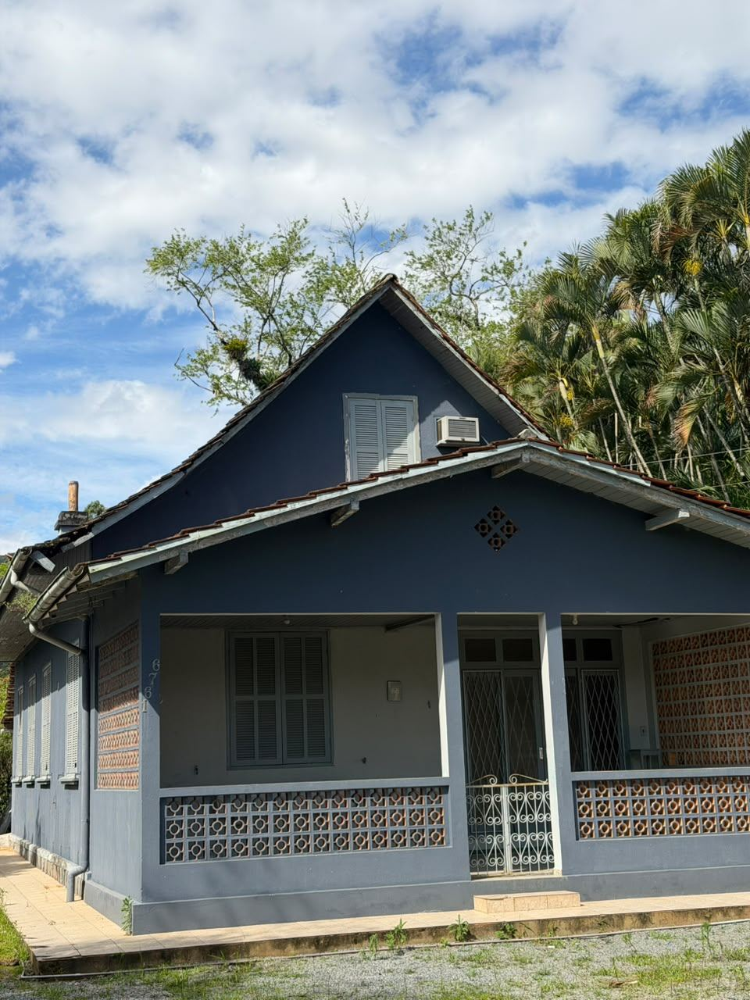

Selecione uma miniatura para ver outra foto.
ANUBIS IMÓVEIS · CORUPÁ/SC
ALUGADOCasarão
Corupá, SC · Ano bom
R$ 2.000/mês
4 Quartos , 2 Banheiros , Sala grande , cozinha e sala de jantar
**Casarão para alugar: charme, espaço e personalidade.** Já imaginou morar em uma casa com estilo clássico, fachada marcante e aquele charme das construções tradicionais? Este casarão reúne personalidade e aconchego em um imóvel que se destaca pela arquitetura, pelos detalhes da fachada e pela varanda frontal, perfeita para aproveitar momentos de tranquilidade no dia a dia. Com um estilo que preserva o encanto das casas tradicionais, é uma opção para quem procura um lugar com identidade própria, espaço e um ambiente acolhedor para chamar de lar. **Um imóvel com história, personalidade e potencial para ser o seu próximo endereço.** Entre em contato para saber mais informações e agendar uma visita.
Este imóvel não está marcado como disponível para nova locação no cadastro atual.